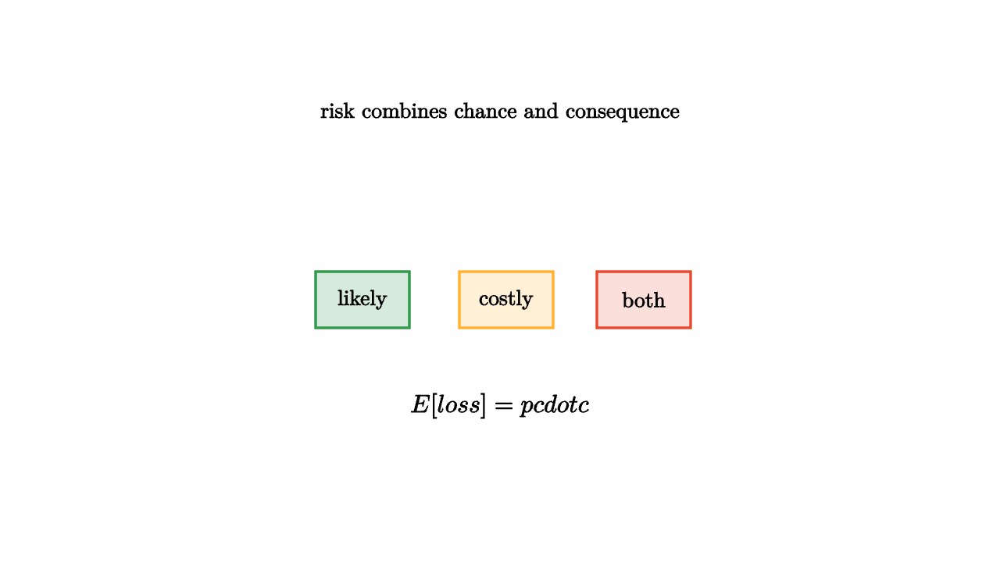

People often talk about risk as if it were only probability. A one percent chance sounds small, so we are tempted to ignore it. But risk also depends on consequence. A one percent chance of a mild inconvenience and a one percent chance of a house fire should not receive the same attention. Expected loss combines both ideas: probability times cost.
A useful classroom example is a phone with a cracked screen risk. Suppose a case costs $25$ and reduces the chance of a $200$ repair from $20$ percent to $5$ percent over the next year. The expected repair cost falls from $40$ to $10$. The case saves about $30$ in expected repair cost, before considering the annoyance of being without the phone. That small computation puts the tradeoff on the table instead of making the decision by instinct.

source
let soft = |col, amount| lerp(WHITE, col, amount)
mesh risk = [
center{1.35u} Text("risk combines chance and consequence", 0.62),
center{1.1l + 0.15d} fill{soft(GREEN, 0.2)} stroke{GREEN, 2} Rect([0.75, 0.45]),
center{1.1l + 0.15d} Text("likely", 0.62),
center{0.05r + 0.15d} fill{soft(ORANGE, 0.2)} stroke{ORANGE, 2} Rect([0.75, 0.45]),
center{0.05r + 0.15d} Text("costly", 0.62),
center{1.15r + 0.15d} fill{soft(RED, 0.18)} stroke{RED, 2} Rect([0.75, 0.45]),
center{1.15r + 0.15d} Text("both", 0.62),
center{1.0d} Tex("E[loss] = p \\cdot c", 0.72)
]Insurance is built on this distinction. Many people pay a small certain cost to avoid a large uncertain loss. The insurer can survive because it pools many independent risks, while the individual may not survive a single severe outcome. The mathematics is not only expected value. It also includes variance, reserves, correlation, and the human fact that losing a home hurts more than gaining the same dollar amount helps.
Daily choices have the same structure. Wearing a seat belt changes the consequence distribution. Backing up files changes the cost of a disk failure. Locking a bike changes both probability and consequence. Probability keeps the judgment explicit.
Risk also has a time scale. A one percent daily chance is enormous across a year, while a one percent lifetime chance may be handled differently. If a risky event has probability $p$ each day and the days are roughly independent, then the chance it happens at least once in $n$ days is
This formula explains why tiny repeated risks deserve attention. A small leak, a weak password, or a dangerous intersection can look harmless during one observation and serious across many opportunities.
source
let soft = |col, amount| lerp(WHITE, col, amount)
"Small Frequent"
mesh chart = [
center{1.25u} Text("small losses can add up", 0.62),
center{1.0l + 0.45d} fill{soft(ORANGE, 0.25)} stroke{ORANGE, 2} Rect([0.35, 0.45]),
center{0.45l + 0.35d} fill{soft(ORANGE, 0.25)} stroke{ORANGE, 2} Rect([0.35, 0.65]),
center{0.1r + 0.2d} fill{soft(ORANGE, 0.25)} stroke{ORANGE, 2} Rect([0.35, 0.95]),
center{0.75r + 0.05d} fill{soft(ORANGE, 0.25)} stroke{ORANGE, 2} Rect([0.35, 1.25])
]
play Grow(0.7)
"Rare Severe"
chart = [
center{1.25u} Text("rare severe losses need protection", 0.62),
center{0.9l + 0.45d} fill{soft(BLUE, 0.18)} stroke{BLUE, 2} Rect([0.4, 0.35]),
center{0.1l + 0.45d} fill{soft(BLUE, 0.18)} stroke{BLUE, 2} Rect([0.4, 0.35]),
center{0.75r + 0.05u} fill{soft(RED, 0.18)} stroke{RED, 2} Rect([0.5, 1.55])
]
play Trans(1.0)
"Mitigation"
chart = [
center{1.25u} Text("good controls shrink the tail", 0.62),
center{0.5l} fill{soft(RED, 0.14)} stroke{RED, 2} Rect([0.65, 1.25]),
stroke{GREEN, 3} Arrow(0.0r, 0.95r),
center{1.25r} fill{soft(GREEN, 0.2)} stroke{GREEN, 2} Rect([0.65, 0.55])
]
play Trans(0.9)The teaching point is that expected loss is a starting line, not a finish line. Rare catastrophic losses deserve special treatment because averages hide survivability. Correlated losses matter because many bad events can arrive together. Good everyday probability asks: how often, how bad, how connected, and how much control do we have?
That last question matters because mitigation can act in different places. Smoke alarms reduce the chance that a small fire becomes a disaster. Fire insurance reduces the financial consequence after disaster has happened. Building codes reduce many people's risks at once. A mature risk conversation separates those levers, then chooses the mix that matches the stakes.